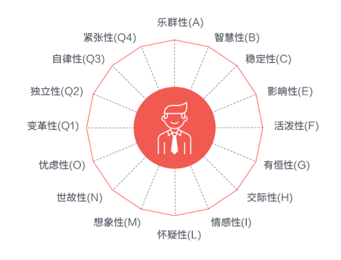

Facenality – 基于面孔识别技术的人格特质推断应用
日常生活中，我们通常会通过第一印象来了解对方， 尤其是对于陌生人， 我们可以仅凭对对方面孔几秒钟的分析，就可以推断对方的性格特征， 来确定是不是可以与这个人交往，甚至会影响法庭判决和总统大选的结果，如对美国小法庭判决的研究发现， 娃娃脸或者具有吸引力面孔的犯人更能获得陪审团的同情，更易获得轻判或者胜诉（Zebrowitz & McDonald, 1991），而大约2/3的美国胜选总统都是被群众认为脸部更具“竞争性”特征的候选人（Todorov, Mandisodza, Goren & Hall, 2005；Ballew & Todorov, 2007）。第一印象对于个人在社会交往中的重要作用可见一斑。
本应用利用基于深度学习的面孔识别技术，试图建立面孔与性格特征间的关联，让计算机也具备一定的“看脸识人”的能力。本应用旨在只利用被评价对象的面孔信息，不需与测评对象进行直接接触（如问卷调查等），对被评价者的性格特质进行推断，获得“第一印象”。该技术可应用于心理测评、人才选拔、个人影响力评估和安保等诸多领域。
上传一张证件照试一试
“第一印象”是如何产生的？
研究表明，对他人的第一印象的产生通常是在我们无意识的情况下自动完成的，并非有意为之(Bar, Neta, & Linz, 2006；Willis & Todorov, 2006; Todorov, Pakrashi, & Oosterhof., 2009)。数千年的进化过程赋予了我们以最短的时间和最少的资源消耗来获取最多的信息的能力，帮助我们在极短时间内判断他人对自身是否有威胁，是否可以亲近，这种方式会让我们更好的生存下去。
人们之所以具备这种“看脸识人”的能力，可能源于多个因素。
- 一方面面孔本身承载了一个人的“过去”（如遗传基因表现、岁月历练痕迹等）和“现在”（情绪状态等）：首先基因对人格有着重要的影响作用，同卵双生子的人格相似性显著高于异卵双生子，而面孔就是基因的一种外在表现；另外，美国纽约大学心理学教授Leopold Bellak认为，面孔之所以能反映一个人的真实性格，是因为一个人最基本的内心情感或习惯性态度，往往能够“凝固”面部的肌肉。也就是说，拥有某种性格的人会经常性地在脸上呈现出对应的某种状态，比如乐观的人经常带有微笑，悲观的人经常耸拉着脸，久而久之，面部轮廓、肌肉纹路走向会随之改变，变成经常出现的那种状态，即便是在中性的表情状态下。
- 另一方面，进化学流派的动物信号理论认为，在生物进化历程中，面孔形态、信号发送者的行为和接收者理解信号的认知过程之间有紧密联系。这与行为主义的经典条件作用有点类似，特定的面孔形态或特征总是与特定的行为相联系，而行为又是人格特质的外显具体表现，因此人们会习惯性地依赖面孔来判断个体的性格特质。
16种人格因素
这里我们采用了“16种人格因素（16PF）问卷”对人格特质进行测量和描述。16种人格因素问卷是美国伊利诺州立大学人格及能力测验研究所卡特尔教授编制的用于人格检测的一种问卷。卡特尔教授也是人格特质理论的主要代表人物，对人格理论的发展作出了很大的贡献。16种人格因素也广泛应用于心理学人格特质研究、临床应用和人员招聘、培养、管理等领域。
卡特尔教授编制的人格特质包含的16种人格特质如下。
